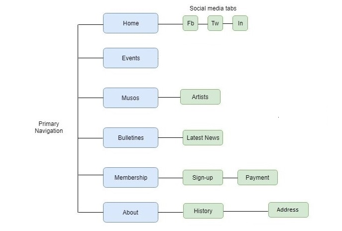

Submitted By: Rishav Koirala
Student-Id: 13622575
The primary goals of Townsville Community Music Centre is to add new members to its existing fleet. TCMC strives to sell tickets specially to general public and aims to fosters the highest standards of music in the community by organizing concerts for local performers or visitors and encourage them to let music centre organize it.
TCMC has developed some performance metrics on the basis of which the success of this web based project will be evaluated. Some of them are listed below:
The web page is designed to accomodate a wide range of informative contents. They can be sumarized as below:
Home: The home page intends to sumarize everything in the website.
Events: This section contains compelling event descriptions, past and upcomming.
Bulletine: This section provides the latest news within the organization.
Membership: This section allows visitors to be a new member of TCMC and encourage members to volunteer in administration, oragnise and promote in concerts and workshops.
About: This section gives description about this organization from history to our future plans for growth and development.
Contact: This section contains contact information, location map.
